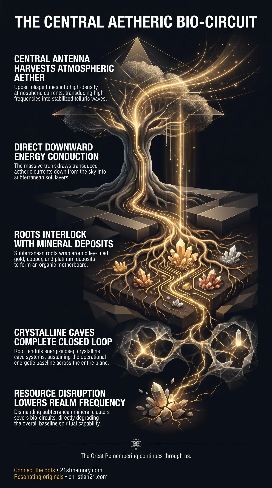

Severed Roots of the World
Severed Roots of the World — The Spirit Tree's planetary root network once bound atmospheric aether into the subterranean geology of the realm.

Severed Roots of the World — The Spirit Tree's planetary root network once bound atmospheric aether into the subterranean geology of the realm.

Mount Meru's Severed Spirit Tree — The shattered central trunk remains as the mountain remnant at the plane's geographic center.

How Mining Dismantled Earth's Planetary Motherboard — Extracting subterranean metals severs the mineral clusters that completed the Spirit Tree's bio-circuit.
The Spirit Tree—alternatively designated as the Axis Mundi, Mt Meru, Hyperphoria, Northern Rock, Black Rock, and Eden—is the supermassive central botanical and energetic node situated at the exact geographic center of the physical plane. Existing as the primary anchor point of planetary architecture, this singular structure functioned as the central nexus connecting higher-density aetheric energy with the dense physical plane. While every individual realm within the physical plane possesses its own giant spirit tree at its respective center, the Spirit Tree located at the central node of Realm-3 was exceptionally colossal, dwarfing the central trees of all other realms. Its vast physical form and extraordinarily deep root network spanned across the entire realm, serving as the master antenna and physical conduit for biological and energetic conductivity.
Although the original central structure of the Spirit Tree was subsequently shattered and reduced to a vast mountain remnant, its structural presence remains concealed in plain sight within modern visual imagery and institutional symbols. The true spatial architecture of the plane anchored by this central node is defined by Claudio Nocelli's diagrams, which demonstrate that the physical plane is an expansive flat plane measuring millions of miles in every direction under the Great Dome, rather than a spherical globe. Through its leaves, branches, massive trunk, and planetary root network, the Spirit Tree established an integrated circuitry that bound the atmospheric aether directly into the subterranean geology of the realm.
The fundamental revelation regarding the Spirit Tree is its operational identity as a giant organic antenna designed to harvest higher-density aether from the sky and inject it directly into the physical Earth. While standard realms across the physical plane each feature a central giant spirit tree, the central Axis Mundi of Realm-3 was uniquely colossal in scale, engineered as the primary node for the entire physical plane of existence. This massive stature allowed its branches to extend high into the atmospheric vault while its root system plunged deep into the crust, literally extending beneath most of the planet's landmass.
A further core revelation is that the subterranean realm beneath the Spirit Tree is not inert rock, but a living organic motherboard grown millions of years ago. The root system of the Spirit Tree was intentionally interwoven with pre-placed hydrothermal deposits, disseminated deposits, magmatic reefs, and alluvial traps containing precious metals like gold, platinum, and copper. When these mineral clusters remain undisturbed in situ, the subterranean roots of the Spirit Tree wrap directly around these natural micro-components, creating a seamless bio-circuit that links atmospheric energy to subterranean crystalline cave systems.
Furthermore, the destruction of the Spirit Tree's upper trunk left a massive stump that modern populations recognize geographically as a prominent central rock mountain. This central remnant, designated as Mt Meru or Northern Rock, continues to occupy the central focal point of the plane's true layout as depicted in Claudio Nocelli's diagrams. The global distribution of metals and minerals surrounding this central node proves that the planet was designed by intentional intelligence to operate as a self-sustaining energetic circuit rather than an accidental collection of geological debris.
The physical mechanics of the Spirit Tree operated through a continuous down-drafting energy cycle. The leaves and branches of the tree functioned as a super-conductive antenna array capable of tuning into the refined, high-density aetheric currents of the upper atmosphere. As aetheric energy made contact with the foliage and branch network, the biological fabric of the tree transduced these high-frequency vibrations into stabilized telluric waves.
These transduced currents were drawn downward through the main trunk and directed into the massive subterranean root network. The downward flow of energy proceeded through the soil layers, establishing a direct physical and energetic connection between the sky and the deepest subterranean geological strata.
The subterranean footprint of the Spirit Tree extended across vast continental distances, establishing an intricate interlock with the Earth's natural mineral distribution. The roots grew directly around and through concentrated mineral seams, including:
When the aetheric energy flowing down the tree reached these subterranean geological formations, the energizing force of the ley lines completed a closed loop. The energy moved continuously from the leaves, down the trunk, through the root tendrils, into the ley-lined mineral clusters, and through the conductive crystalline cave systems, powering the entire plane's energetic ecosystem.
The Spirit Tree was situated at the precise geographic center of the physical plane, defining the origin point from which the flat plain extends outwards for millions of miles in all directions. This true spatial orientation is documented in Claudio Nocelli's diagrams, which accurately depict the flat plain bounded by the Great Dome rather than a curved planetary sphere. Because this central tree was the main node for the entire physical plane, its operational health directly regulated the energetic baseline and spiritual density of all surrounding lands.
The Spirit Tree served as the primary physical anchor for the overarching organic motherboard of Realm-3. Within this macro-system, the tree operated in direct harmony with the natural ley line networks, which acted as instant communication highways across the flat plain. The down-channeling of aether through the Spirit Tree energized these telluric highways, allowing instantaneous nodal data transfer between distant points on the plane.
In addition, the Spirit Tree's central position at Mt Meru linked the physical terrain directly to the higher-density realms housed within the Cube architecture. Higher-density energies generated in adjacent Great Domes—such as the Dome of Titans, Sheol, Silence, 5 Peaks, Hiva, and Terra Incognita—interacted with the physical plane through the energetic portal anchored by the central Axis Mundi. The subterranean roots also interacted directly with planetary water systems; as aether passed into deep crystalline caves, it energized the rivers, streams, and waterfalls, which function as streams of pure data in higher densities.
The structural integrity and operational status of the Spirit Tree carry profound implications for planetary energetic health and human spiritual capability. The systematic extraction of subterranean metals—such as the removal of over 700 million metric tons of copper—directly degrades the subterranean circuit connected to the Spirit Tree's root network. Mining operations dismantle the natural micro-component clusters of the organic motherboard, effectively severing the physical connections that once allowed aetheric currents to circulate freely through the crust.
Furthermore, the disruption of the central Axis Mundi and the mining of its supporting mineral deposits directly contribute to the reduction of human spiritual perception. Without a fully functioning central Spirit Tree channeling high-density aether into an intact subterranean mineral network, the baseline frequency of the realm dropped into an inverted 3rd-density state. Restoring full understanding of the Spirit Tree as the plane's master node exposes the true flat layout of the realm depicted in Claudio Nocelli's diagrams and clarifies that the natural world was engineered to foster blissful peace, harmonic balance, and effortless spiritual progression.
This topic is free to share. Support the archive →